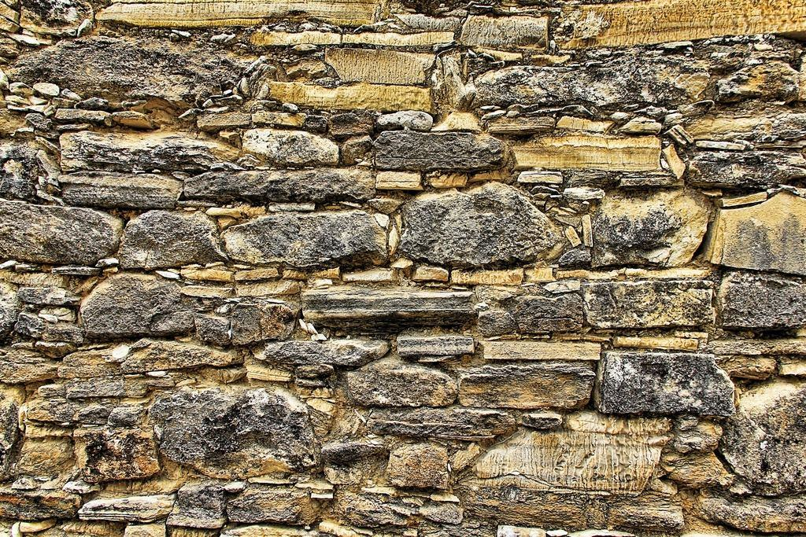
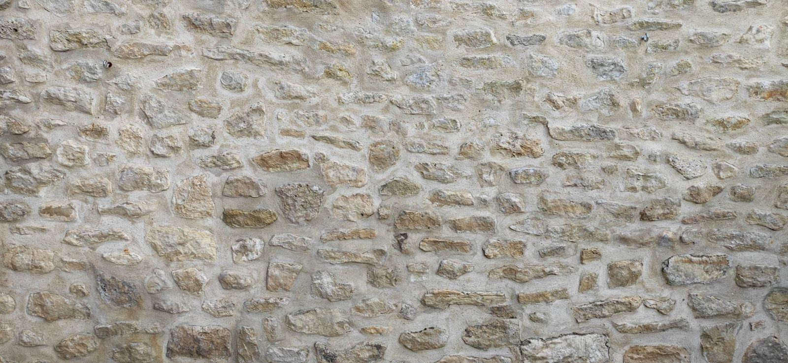
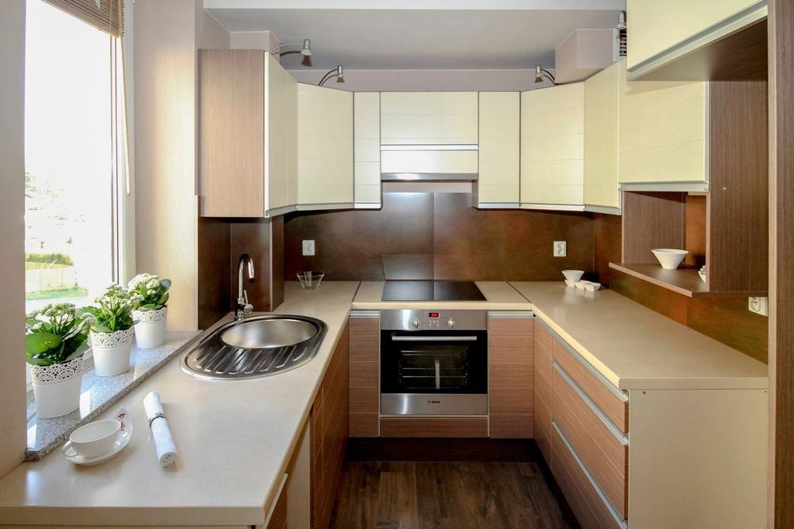
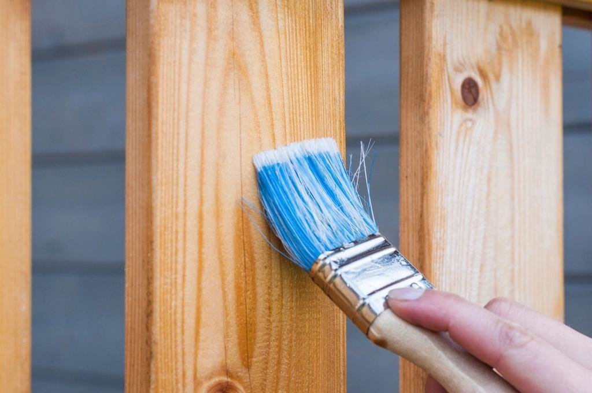
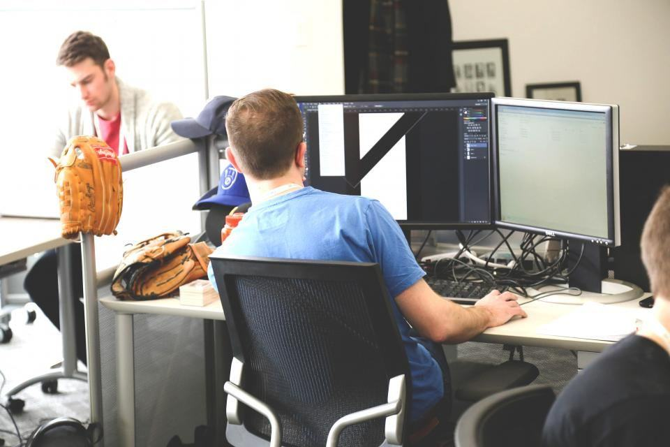

Tjänster
I dag är vi 28 personer: timmermän, snickare, murare, målare och två antikvarier. Snickeriet ligger i den gamla mejeribyggnaden i Svärdsjö, och där renoveras omkring 400 fönsterbågar om året.
Vilket hus behöver hjälp?

Kyrkor och byggnadsminnen
Vi har arbetat i 34 kyrkor i Västerås och Uppsala stift. Arbetet sker med tillstånd från länsstyrelsen och med antikvarisk medverkan under hela projektet.
Kyrkan kan ofta hållas öppen för gudstjänster under renoveringen.

Timmerhus och gårdar
Bergsmansgårdar, härbren och lador behöver ofta nya syllar efter 150 år. Vi lyfter huset med domkrafter, byter de ruttna stockarna och sänker tillbaka det.
Virket är vinterfällt och kommer från skogar i Svärdsjö och Envikens finnmarker.

Fönster och snickerier
Gamla fönster håller i hundra år till om de får ny kitt och linoljefärg vart tjugonde år. I snickeriet tillverkar vi också nya bågar, dörrar och lister efter gamla profiler.
Vi har 140 profilstål för hyvling av lister från 1700- till 1900-tal.

Puts, murning och färg
Kalkbruk, slamfärg och linoljefärg är material som låter huset andas. Fel material ger fuktskador inom några år, och det är där många av våra uppdrag börjar.
Rödfärgen kokar vi själva på järnvitriol, råg och Falu rödfärgspigment.
Från besiktning till rapport
- 1

Besiktning i par
Antikvarie och hantverkare går igenom huset tillsammans och tar prover på puts och färg.
- 2

Åtgärdsprogram
Vi skriver vad som bör göras, i vilken ordning och med vilka material – och söker tillstånd.
- 3

Hantverket
Arbetet utförs med traditionella verktyg där det spelar roll och med maskiner där det inte syns.
- 4

Antikvarisk rapport
Allt dokumenteras med foto och text, och rapporten arkiveras hos länsstyrelsen.
Utbildade i traditionellt hantverk
- Certifierad sakkunnig KULVåra antikvarier är certifierade sakkunniga enligt kulturmiljölagen.
- GesällbrevFyra av våra hantverkare har gesällbrev i timmermanshantverk eller byggnadsmåleri.
- ID06Personalliggare och legitimation på alla arbetsplatser.
- ByggföretagenMedlemmar, med kollektivavtal och ansvarsförsäkring.